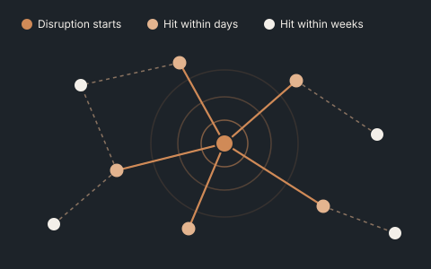

Services
Ways to work together.
Three offers, from a short diagnostic to a tool your team keeps. Start small, and go deeper only where it pays. Most engagements start with the Diagnostic.
Offer 01
Disruption Diagnostic
Start here

- For
- COOs and supply chain leaders after a disruption, facing a problem that keeps coming back, or answering the board’s “what if X closes?”
- Format
- A 2-day executive workshop, with about two weeks of preparation and write-up. Fixed fee.
- What happens
- Your leadership team maps why the problem recurs: its feedback loops and delays. The main sites and routes are screened on time-to-survive versus time-to-recover. Response options are tested live in the room.
- You leave with
- A causal map the team agrees on, a ranked list of exposures, the three leverage points worth acting on, and a short decision memo.
- See it working
- Supply Pulse · Lag Lab · Global Disruption Atlas
Offer 02

Network Flexibility Study
Go deeper
- For
- CFOs and COOs about to commit capital: a new site, a capacity expansion, a second source or contract manufacturer, or a network redesign.
- Format
- 8–12 weeks. Fixed fee per phase.
- What happens
- The network design is optimised and stress-tested across thousands of plausible futures. The flexibility in each option is valued explicitly. Every decision is sorted into commit now, defer, stage, lease or walk away, and compared with a fair baseline.
- You leave with
- The option set with a value on each option, a staged plan with clear decision triggers, a board-ready investment memo, and the model itself.
- See it working
- Real Options for Network Design · Network Stress Test
Offer 03

Decision Tool Build and Handover
Keep the capability
- For
- Heads of supply chain strategy and planning who want the capability in-house, not another report.
- Format
- 6–10 weeks to build, then three months of fixed support.
- What happens
- An interactive planning or stress-test tool is configured on your own network and data. It is checked against your historical outcomes, and your analysts are trained to run it.
- You leave with
- A working, validated tool with its code, a validation report, documentation and a team that can use it. Optional annual model review.
- See it working
- Tierwise · Network Stress Test · how the tools are validated
I work with organisations in mining, food and beverage, maritime and ports, and healthcare logistics. The methods behind each offer are described on the Technical depth page.
Not sure which one fits